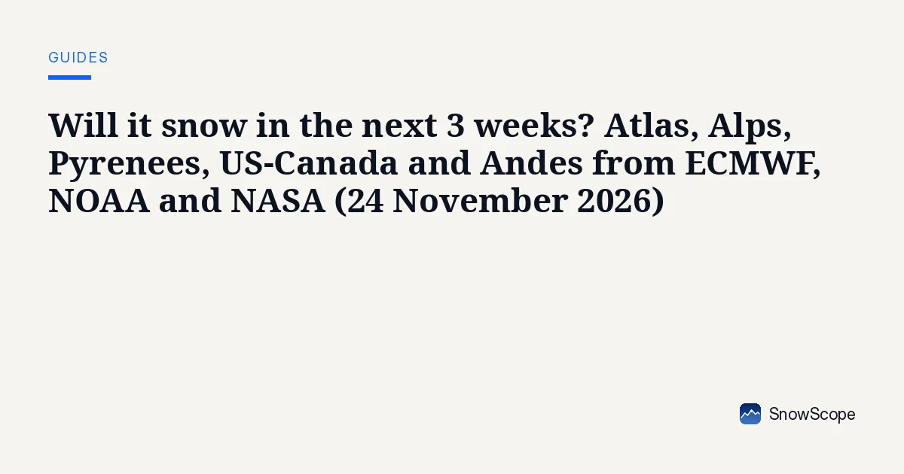
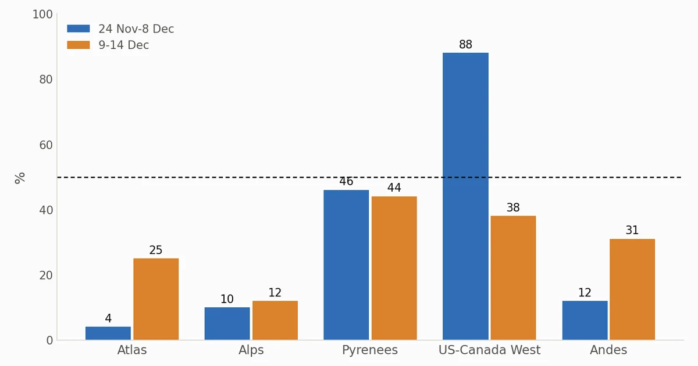
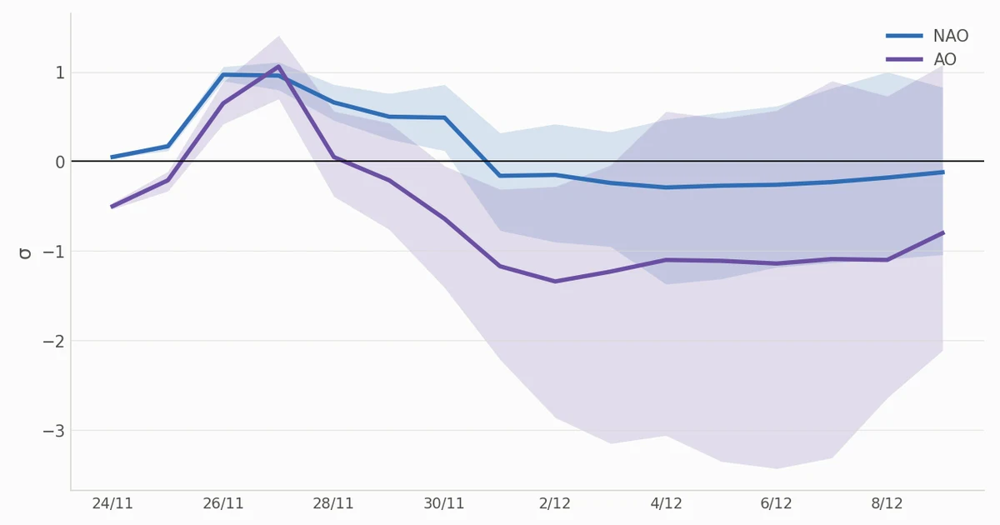
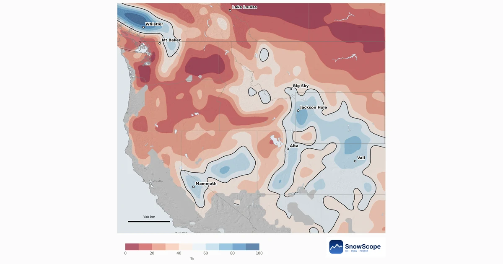
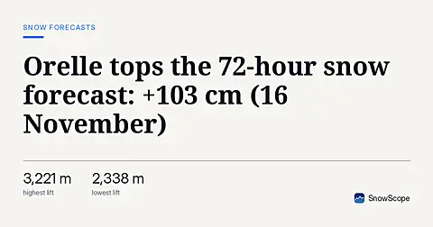

Will it snow in the next 3 weeks? Atlas, Alps, Pyrenees, US-Canada and Andes from ECMWF, NOAA and NASA (24 November 2026)
Nobody can tell you today whether it will snow in Chamonix on 12 December. What science can do is something more honest: give the odds. We took the full 50-member ECMWF ensemble run of 24 November 00 UTC for the next 15 days, the NOAA GEFS ensemble for days 16 to 21, the NOAA forecasts of the big circulation patterns (NAO, AO, PNA, AAO) and NASA's MODIS snow maps of the last 8 days, and turned them into one number per mountain range: the chance that the next 15 days bring more snow than a normal late November and early December (1991-2020). The answer is very different from one range to the next. The western US and Canada lead with 88 %, the Pyrenees are a coin toss at 46 %, the Alps sit at 10 % despite a snowy week ahead, and the Atlas is almost certainly dry at 4 %.
See the live snow forecast for Alps in the SnowScope appSnow depth, powder alerts and the 3D map, free.

Three time scales, three kinds of forecast
A weather forecast does not lose its skill all at once. For the first 5 to 7 days the ensemble members mostly agree, and a snowfall total can be read almost like a deterministic number. Between day 8 and day 15 the members spread out and the useful information is the probability. Beyond two weeks, the sub-seasonal range, the day-to-day weather is no longer predictable, but slow drivers such as the North Atlantic Oscillation or the Madden-Julian Oscillation still tilt the odds for whole weeks (Vitart 2014; Vitart and Robertson 2018; Cassou 2008).
So we split the outlook in three windows: 24 to 30 November (days 1-7) and 1 to 8 December (days 8-15) from the ECMWF ensemble, then 9 to 14 December (days 16-21) from NOAA's GEFS, the only open ensemble that runs that far every day. For each window we compare with the same calendar days in the 1991-2020 climate record of ECMWF, on the same 0.25° grid, so a bias of the grid itself cancels out in the ratio.
The formulas behind every number
Each ensemble member i gives a snowfall total S_i, in millimetres of water, summed over the window: S = Σ s_t. To turn water into fresh snow we use Δh = S · ρw / ρnew with a fresh-snow density ρnew of about 100 kg/m³, so 1 mm of water is about 1 cm of new snow. Judson and Doesken (2000) measured mean fresh-snow densities of 72 to 103 kg/m³ at six Rocky Mountain sites, so this rule is good to roughly ± 30 %: cold, dry powder gives more centimetres, wet snow fewer.
The probability is simply the share of members above a threshold τ: P(S > τ) = (1/N) Σ 1[S_i > τ], with N = 50 for ECMWF and N = 16 for GEFS. With τ equal to the 1991-2020 normal of the window, P is the chance of an above-normal period: 50 % means no signal, below 30 % a clear dry signal, above 70 % a clear snowy one. We also give the ratio R = mean(S) / normal and the snow share of precipitation φ = mean(S) / mean(P), which tells whether a wet spell falls as snow or rain at the height of a grid cell.
For days 16 to 21 GEFS has no snowfall field, so we build one: S = Σ P6h · CSNOW, the 6-hour precipitation counted only when the member's categorical snow flag is on. On the ground, NASA's MODIS reads snow with the normalised difference snow index, NDSI = (green - SWIR) / (green + SWIR), using band 6 at 1.6 µm (Hall et al. 2002; Riggs et al. 2019).

Range by range: the next 15 days
Alps: a snowy first week, then a dry one. Across the Alpine cells above 1,000 m the ensemble mean is 19.1 mm of snow water for 24-30 November, against a normal of 17.8 mm, but only 9 mm for 1-8 December against 21.9 mm. Over the 15 days that adds up to 28.1 mm against 39.7 mm, and only 10 % of the members beat the normal.
Pyrenees: 19.1 mm against a normal of 18.3 mm, a near-normal fortnight with 46 % of members above normal, wetter in the west and centre than towards Andorra and Cerdanya.
Western US and Canada: 22.6 mm against 19.3 mm above 1,500 m, and 88 % of members above normal, the strongest snowy signal of the five ranges, carried by the Coast Mountains, the Sierra Nevada, Utah and Colorado.
Atlas: 0.9 mm against a normal of 4.4 mm, 4 % of members above normal. Andes: 2.9 mm against 5.4 mm, 12 %, as the southern spring dries out.
Days 16 to 21: what NOAA GEFS adds
For 9 to 14 December the 16 complete GEFS members give these chances of above-normal snowfall: Atlas 25 %, Alps 12 %, Pyrenees 44 %, western US and Canada 38 %, Andes 31 %. Read them as a tilt, not a forecast. With 16 members each member is worth about 6 percentage points, and categorical snow flags tend to overcount wet snow near the melting level, so we only trust values far from 50 %.

The circulation patterns that tilt the odds
The NAO (Hurrell 1995) is the pressure seesaw between Iceland and the Azores. A positive NAO steers Atlantic storms to northern Europe; a negative one sends them further south, towards Iberia, the Pyrenees and Morocco (Knippertz et al. 2003; López-Moreno and Vicente-Serrano 2007). NOAA's GEFS forecast brings the NAO from +0.97 on 26 November down to -0.29 by 4 December, with 60 % of the 31 member-days negative from day 8.
The Arctic Oscillation (Thompson and Wallace 1998) drops harder, to -1.34 on 2 December, with 77 % of member-days negative. A negative AO weakens the polar vortex and lets cold air spill south. The PNA (Wallace and Gutzler 1981) stays positive, +1.19 today and +0.23 on 9 December, a ridge over the West and trough over the East. In the south the AAO (Gong and Wang 1999) turns negative from 30 November, which usually pushes Pacific fronts closer to the Andes, though in late spring they bring less snow than in winter.

What this outlook can and cannot tell you
Every number here is for a 0.25° cell, about 25 km across, whose mean height is often 500 to 1,000 m below the summits. The forecast smooths the peaks, so snowfall at a high resort is usually more than its cell says, and the snow line inside a cell can be very different from one valley to the next. That is why we compare ratios to the normal of the same cell rather than raw totals, and why the snow on the ground comes from NASA's 500 m MODIS maps, which see each slope, when clouds allow.
These are odds, not promises. A range with a 10 % chance of an above-normal fortnight can still get one big storm, and a 90 % signal can fizzle if one low-pressure system tracks 200 km off. For days 1 to 5, use a daily forecast; for avalanche conditions, use the official avalanche bulletins such as SLF. For water resources, snow on the ground matters more than snowfall, and remote sensing such as MODIS or the reconstructions of Durand et al. (2008) and Baba et al. (2018) is what turns it into snow water.
Tips for skiers
- Planning a trip in the next two weeks: the western US and Canada have the best odds (88 % above normal), then the Pyrenees.
- In the Alps, the snow falls this week: the first days of December look calmer, so the best skiing is right after the storm, with a good base above about 1,000 m.
- In the Atlas, do not count on fresh snow before mid-December; check again when the NAO turns clearly negative.
- Odds beyond day 10 change from run to run: look at the trend over several days rather than one run.
References and credits
- ECMWF open data: IFS ensemble forecasts (ENS), run of 24 November 2026 00 UTC, 0.25° grid, snowfall and total precipitation (CC BY 4.0) www.ecmwf.int/en/forecasts/datasets/open-data
- Zhou, X. et al. (2022). The development of the NCEP Global Ensemble Forecast System version 12. Weather and Forecasting 37, 1069-1084 doi.org/10.1175/WAF-D-21-0112.1
- NOAA Global Ensemble Forecast System (GEFS) open data on AWS: run of 24 November 2026 00 UTC, 0.5° grid, APCP and CSNOW registry.opendata.aws/noaa-gefs/
- Hersbach, H. et al. (2020). The ERA5 global reanalysis. Quarterly Journal of the Royal Meteorological Society 146, 1999-2049 (monthly means 1991-2020, Copernicus Climate Change Service) doi.org/10.1002/qj.3803
- NOAA Climate Prediction Center: daily NAO, AO, PNA and AAO index forecasts from the GEFS ensemble www.cpc.ncep.noaa.gov/products/precip/CWlink/
- Vitart, F. (2014). Evolution of ECMWF sub-seasonal forecast skill scores. Quarterly Journal of the Royal Meteorological Society 140, 1889-1899 doi.org/10.1002/qj.2256
- Vitart, F. and Robertson, A.W. (2018). The sub-seasonal to seasonal prediction project (S2S) and the prediction of extreme events. npj Climate and Atmospheric Science 1, 3 doi.org/10.1038/s41612-018-0013-0
- Cassou, C. (2008). Intraseasonal interaction between the Madden-Julian Oscillation and the North Atlantic Oscillation. Nature 455, 523-527 doi.org/10.1038/nature07286
- Hurrell, J.W. (1995). Decadal trends in the North Atlantic Oscillation: regional temperatures and precipitation. Science 269, 676-679 doi.org/10.1126/science.269.5224.676
- Thompson, D.W.J. and Wallace, J.M. (1998). The Arctic Oscillation signature in the wintertime geopotential height and temperature fields. Geophysical Research Letters 25, 1297-1300 doi.org/10.1029/98GL00950
- Wallace, J.M. and Gutzler, D.S. (1981). Teleconnections in the geopotential height field during the Northern Hemisphere winter. Monthly Weather Review 109, 784-812 doi.org/10.1175/1520-0493(1981)109<0784:TITGHF>2.0.CO;2
- Gong, D. and Wang, S. (1999). Definition of Antarctic Oscillation index. Geophysical Research Letters 26, 459-462 doi.org/10.1029/1999GL900003
- Judson, A. and Doesken, N. (2000). Density of freshly fallen snow in the central Rocky Mountains. Bulletin of the American Meteorological Society 81, 1577-1587 doi.org/10.1175/1520-0477(2000)081<1577:DOFFSI>2.3.CO;2
- Riggs, G.A., Hall, D.K. and Román, M.O. (2019). MODIS Snow Products Collection 6.1 User Guide. NASA / NSIDC nsidc.org/sites/default/files/c61_modis_snow_user_guide.pdf
- Hall, D.K., Riggs, G.A., Salomonson, V.V., DiGirolamo, N.E. and Bayr, K.J. (2002). MODIS snow-cover products. Remote Sensing of Environment 83, 181-194 doi.org/10.1016/S0034-4257(02)00095-0
- NASA Global Imagery Browse Services (GIBS): MODIS_Terra_NDSI_Snow_Cover and MODIS_Aqua_NDSI_Snow_Cover, 16-23 November 2026 www.earthdata.nasa.gov/engage/open-data-services-software/earthdata-developer-portal/gibs-api
- Gascoin, S., Hagolle, O., Huc, M., Jarlan, L., Dejoux, J.-F., Szczypta, C., Marti, R. and Sánchez, R. (2015). A snow cover climatology for the Pyrenees from MODIS snow products. Hydrology and Earth System Sciences 19, 2337-2351 doi.org/10.5194/hess-19-2337-2015
- Baba, M.W., Gascoin, S., Jarlan, L., Simonneaux, V. and Hanich, L. (2018). Variations of the snow water equivalent in the Ourika catchment (Morocco) over 2000-2018 using downscaled MERRA-2 data. Water 10, 1120 doi.org/10.3390/w10091120
- Boudhar, A., Hanich, L., Boulet, G., Duchemin, B., Berjamy, B. and Chehbouni, A. (2009). Evaluation of the Snowmelt Runoff Model in the Moroccan High Atlas Mountains using two snow-cover estimates. Hydrological Sciences Journal 54(6), 1094-1113 ird.hal.science/ird-00491127
- Durand, M., Molotch, N.P. and Margulis, S.A. (2008). Merging complementary remote sensing datasets in the context of snow water equivalent reconstruction. Remote Sensing of Environment 112, 1212-1225 doi.org/10.1016/j.rse.2007.08.010
- Marty, C. (2008). Regime shift of snow days in Switzerland. Geophysical Research Letters 35, L12501 (WSL Institute for Snow and Avalanche Research SLF) doi.org/10.1029/2008GL033998
- Guan, B., Molotch, N.P., Waliser, D.E., Fetzer, E.J. and Neiman, P.J. (2010). Extreme snowfall events linked to atmospheric rivers and surface air temperature via satellite measurements. Geophysical Research Letters 37, L20401 doi.org/10.1029/2010GL044696
About these numbers
Snowfall: ECMWF ensemble (50 members, 0.25°) to day 15 and NOAA GEFS (16 members, 0.5°) for days 16-21, compared with the 1991-2020 normal of the same calendar days. Snow on the ground: NASA MODIS, last clear view of 16-23 November. Fresh-snow density 100 kg/m³.
Cite this report
For research, teaching or the press: the numbers and charts are free to reuse under CC BY 4.0 with this citation.
SnowScope (2026), Will it snow in the next 3 weeks? Atlas, Alps, Pyrenees, US-Canada and Andes from ECMWF, NOAA and NASA (24 November 2026), https://snowscope.app/blog/en/2026/11/snow-next-3-weeks-ecmwf-noaa-nasa-outlook-24-november-2026.html, accessed 2026-11-24
SnowScope (Atlas Labs). (2026, November 24). Will it snow in the next 3 weeks? Atlas, Alps, Pyrenees, US-Canada and Andes from ECMWF, NOAA and NASA (24 November 2026). SnowScope snow reports. https://snowscope.app/blog/en/2026/11/snow-next-3-weeks-ecmwf-noaa-nasa-outlook-24-november-2026.html
BibTeX
@misc{snowscope2026snownext3weeksecmwfnoaan,
author = {{SnowScope (Atlas Labs)}},
title = {Will it snow in the next 3 weeks? Atlas, Alps, Pyrenees, US-Canada and Andes from ECMWF, NOAA and NASA (24 November 2026)},
year = {2026},
month = nov,
howpublished = {\url{https://snowscope.app/blog/en/2026/11/snow-next-3-weeks-ecmwf-noaa-nasa-outlook-24-november-2026.html}},
note = {Published 2026-11-24 16:50 UTC; accessed 2026-11-24}
}· CC BY 4.0 · Methods, data and tools →
Follow Alps
Free: a message when fresh snow is coming, and the forecast every morning.
More snow reports

Orelle reached 31 cm by 16 November, up 17 cm in one week. The Alps are forecast to get up to 103 cm more snow by 19 November.

Orelle leads the global forecast with 110 cm in 72 hours. Europe dominates; North America trails. Data from 18 November.

Alpe d'Huez will receive the most snow in the Alps over the next 72 hours. Beartooth Basin Summer leads the US West and Canada in fresh snow through Sunday.